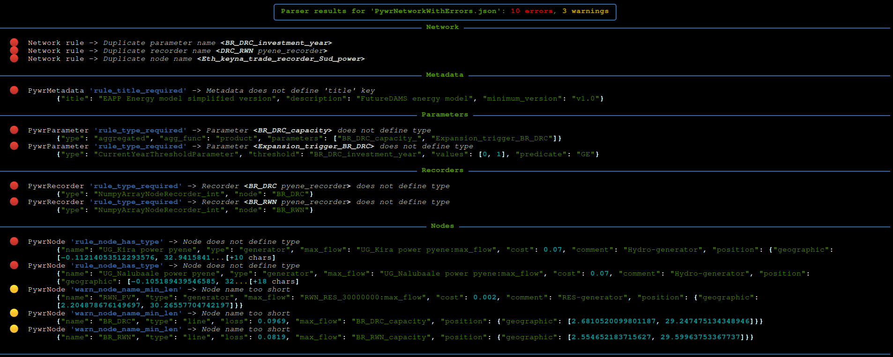

Basic Usage
Overview
PywrParser provides both a command-line utility for validating Pywr JSON models, and a Python library which may be used to parse and manipulate Pywr networks.
This section provides details of the command-line utility.
Usage of the pywrparser library is described in The pywrparser Library section.
Installation
PywrParser can be installed with either Poetry or pip:
$ git clone git@github.com:pmslavin/pywrparser.git
$ cd pywrparser
$ poetry install
Or using pip:
$ git clone git@github.com:pmslavin/pywrparser.git
$ cd pywrparser
$ pip install .
To display the pywrparser usage guide:
$ pywrparser -h
usage: pywrparser [-f <filename> | -l] [OPTIONS]
A toolkit for parsing and validating Pywr models.
optional arguments:
-h, --help show this help message and exit
-f <filename>, --filename <filename> File containing a Pywr network in JSON format
-l, --list-rulesets Display a list of all available rulesets
validation options:
--use-ruleset <ruleset>
Apply the specified ruleset during parsing
--raise-on-warning Raise failures of parsing warnings as exceptions. Implies `--raise-on-error`
--raise-on-error Raise failures of parsing rules as exceptions
--ignore-warnings Do not display parsing report if only warnings are present
--no-duplicate-edges Duplicate edges are treated as an error
display options:
--json-output Display parsing report in json format for machine reading
--pretty-output Display parsing report on the console with colour. This is the default output format
--no-emoji Omit emoji in console parsing reports
--no-colour Omit colour output in console parsing reports. Implies `--no-emoji`
--terse-report Display only a terse report for valid networks
general options:
--no-digest Omit sha256 digest in JSON and dict parsing reports
--version Display the version of pywrparser
For further information, please visit https://pmslavin.github.io/pywrparser
Validation
The basic operation of the pywrparser command validates a Pywr JSON network,
and returns either:
A report describing a valid Pywr network, along with any warnings generated when parsing the network
A report detailing the errors that prevented parsing
For example…
$ pywparser --filename PywrNetworkWithErrors.json
..results in the display of a parsing report. This report provides details of any rule and warning failures encountered when validating the input, categorised by network component, and including an excerpt of the input which generated the error or warning. For example…
{kind=link}
This report may be customised with the various configuration options described
in the display options section of the output from pywrparser --help.
A valid network is one for which neither errors nor warnings are generated. Parsing a valid network results in the display of a brief report describing characteristics of the network…
$ pywrparser --filename PywrValidNetwork.json
File: PywrValidNetwork.json
sha256: c78b1c3ba311719cabc52dca32b4075a46c926c362b68d0aaa5696aebbad7318
Title: A simple Pywr energy model demonstration
Description: Pywr energy model
Nodes: 525
Edges: 563
Parameters: 247
Recorders: 225
The --no-digest causes the report to omit calculation and display of the
SHA256 digest, which may improve performance for large files on slow systems.
The --terse-report option causes only a summary of the numbers of each component
defined in that valid network to be displayed, for example…
$ pywrparser --filename PywrValidNetwork.json --terse-report
{'nodes': 525, 'edges': 563, 'parameters': 247, 'recorders': 225}
This is useful where the output is intended to be consumed by an automated process.
Similarly, the --json-output option provides a full parsing report as json,
including any errors and warnings generated during parsing. The top-level
parse_results key in this JSON output includes a summary of the parsing output.
$ pywrparser --filename PywrValidNetwork.json --json-output
{
"parse_results": {
"file": {
"name": "PywrValidNetwork.json",
"sha256": "c78b1c3ba311719cabc52dca32b4075a46c926c362b68d0aaa5696aebbad7318"
},
"created_at": "2022-05-15 21:15:31",
"ruleset": "Default",
"errors": 0,
"warnings": 0
}
}